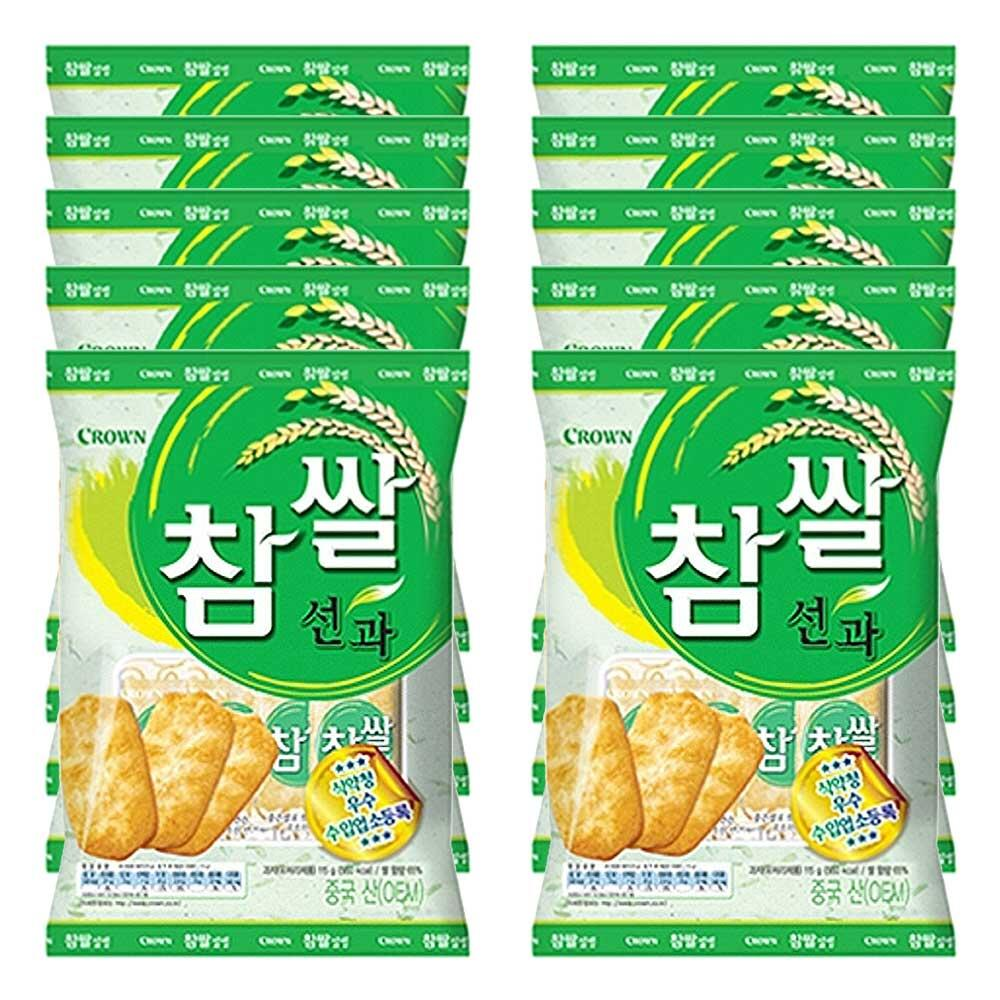
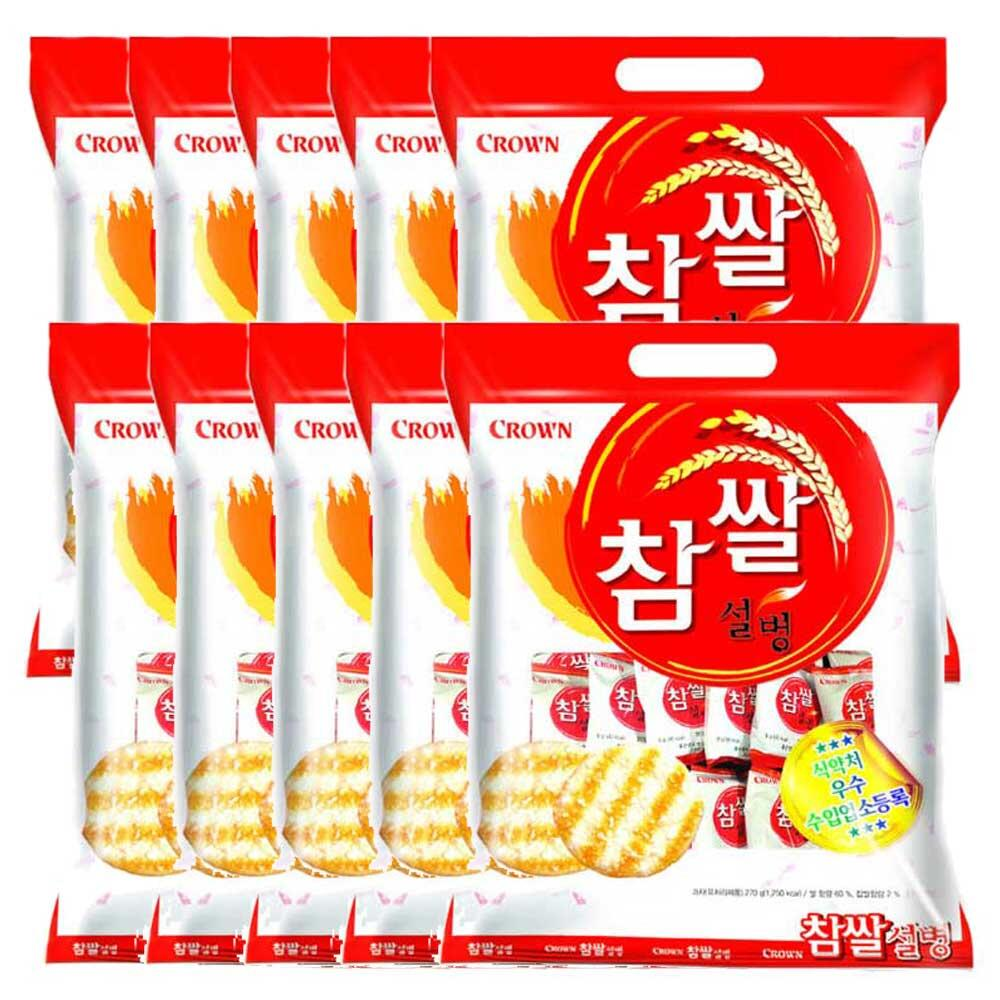

과자 이거 가져다 놓지 말고

빨간거 가져다 놓으라고, 초록색 가져다 놓을꺼면, 빨간거랑 같이 가져다 놓던가 ㅅㅂ

과자 이거 가져다 놓지 말고

빨간거 가져다 놓으라고, 초록색 가져다 놓을꺼면, 빨간거랑 같이 가져다 놓던가 ㅅㅂ
어릴때 농심미과1:1 이라는 쌀과자 엄청 좋아했는데
초록색 저게 맛이 똑같음
개소리 붐업
빨간게 맛있나?
빨간게 설탕덩어리붙은거고 초록이 쌀로별처럼 간장조림되있는걸껄? 취향차이이지
짭조롬 한게 더 맛있던데
나도 초록이맛있지만
답이 있는게 아니니 개취인거지
초록색은 거의 마약에 가까움
나도 빨간색파인데 초록색좋아하는 사람이 더 많은듯? 그리고 파란색도 있더라
분명 초록색도 있었을 거임 금방 사라져서 그렇지
넌 오란다랑 곡물21이나 먹어라 맛알못쉑
초록이는 양자상태라서 내용물이 관측과 동시에 껍질로 붕괴해버림
맛알못
회사 사장인가보네..초록 갖다놓으면 금방 없어지니 빨간거 갖다 놓으란거구만
맛알못쉑
쿠쿠다스랑 초코하임이나 사라고
초록이 더 맛잇지않나
둘다 꺼져
초록이 더 맛있단 애들은 보추도 맛있다고 먹을 놈들임
울회사도 저거만 남던데. 왜 사는지 모르겠음.
저거 차이가 있었어?
초록은 짭짤, 빨강은 달달 걍 취향차이지.
1+1으로 빨간거는 본인이 가져간거아니냐! 그러지않고서야!
담당자 주머니에 슈킹 슈킹!
초록만 가져다놔야 오래갑니다
둘다놓으면 단짠단짠이라 바로 동나요
소신발언) 파랑(누룽지)가 고트임
맛알못